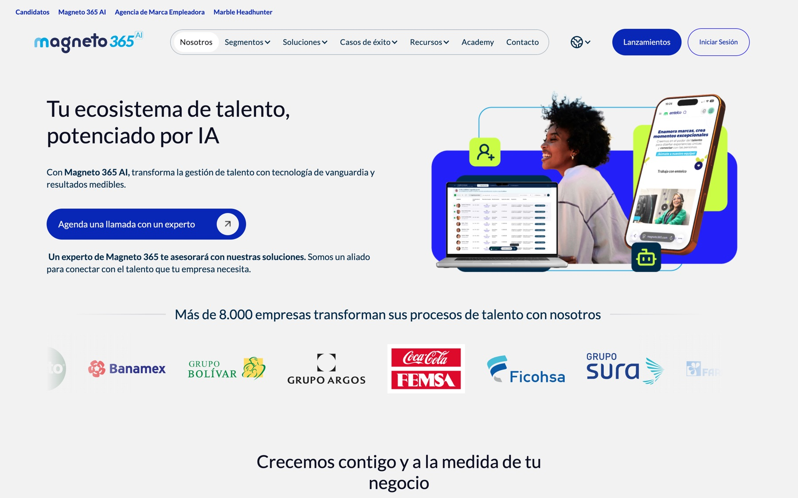
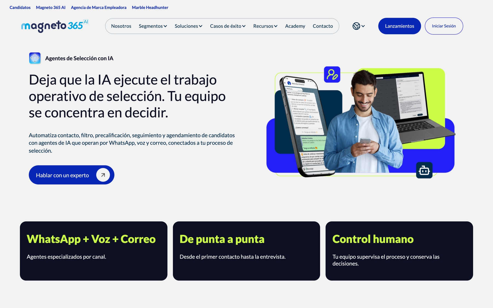
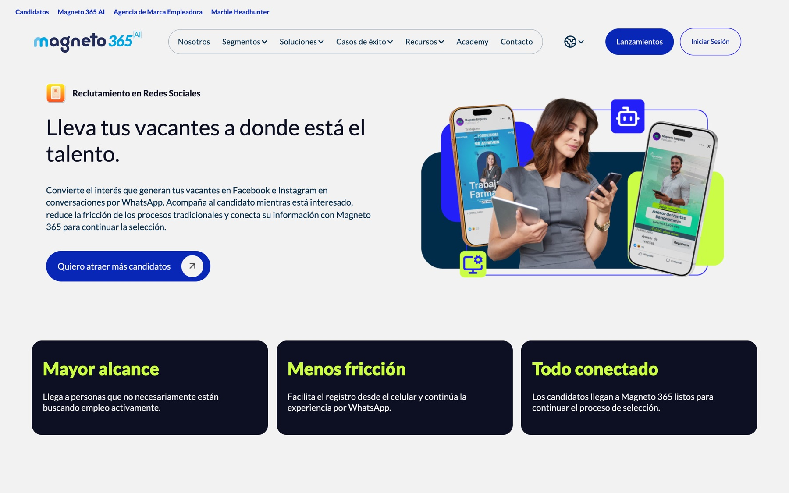
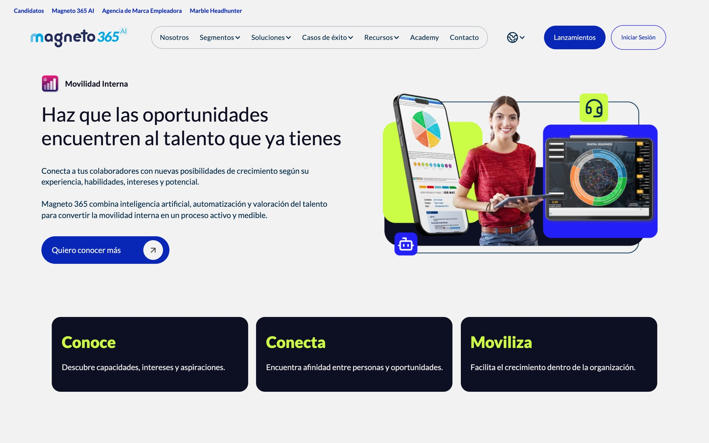
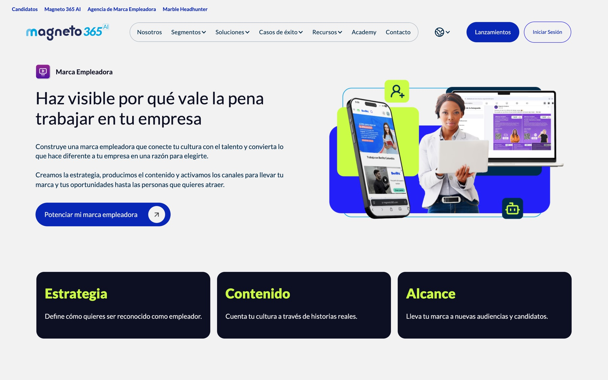
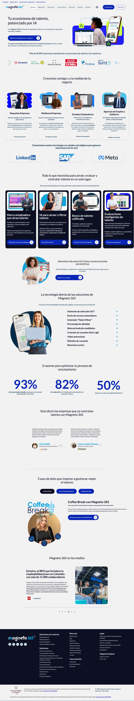
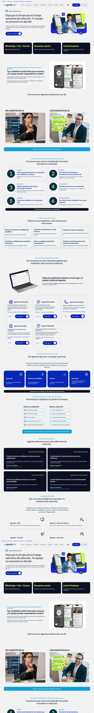
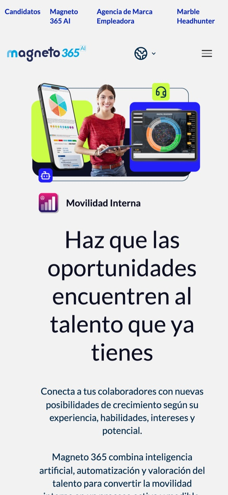
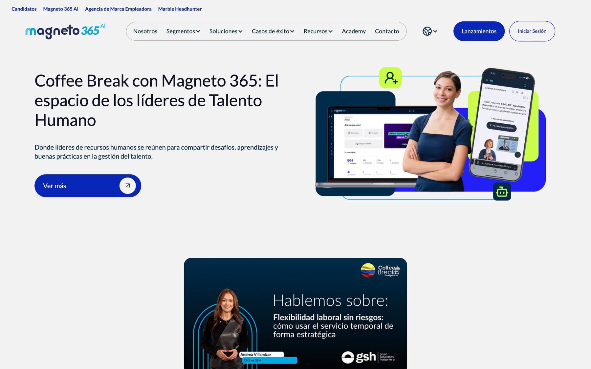
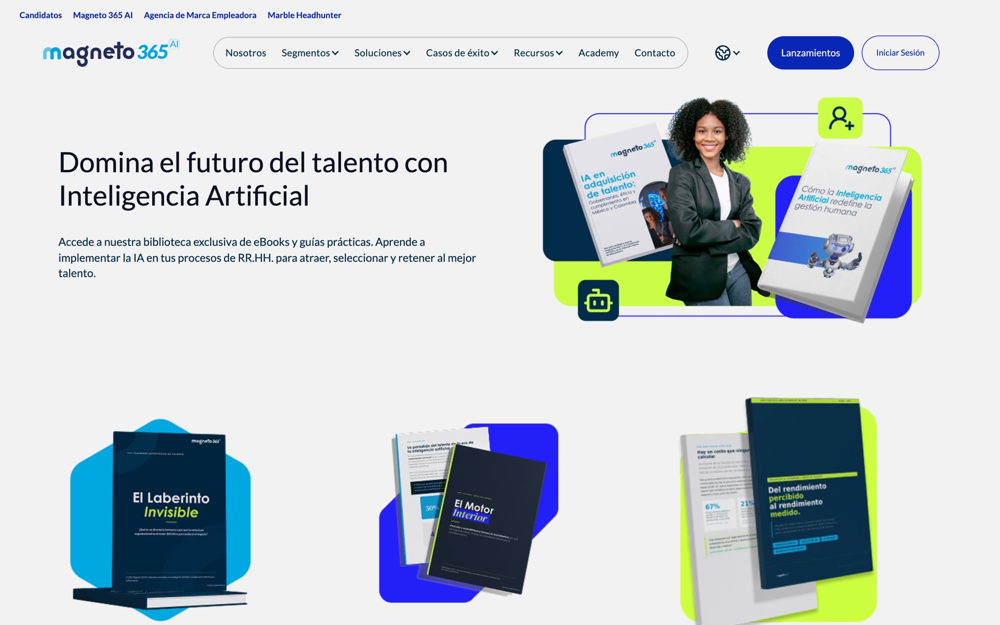

Fiel al diseño
Espacios, tamaños y jerarquía tipográfica iguales al diseño aprobado, no aproximados.
El nuevo sitio corporativo de Magneto 365 AI, una plataforma de talento con IA con más de quince soluciones y versiones para cuatro países. Mi parte fue llevar los diseños a Webflow, página por página, cuidando que se vieran igual de bien en escritorio y en el celular.

Magneto evolucionó a Magneto 365 AI y su oferta creció: ATS, agentes de selección con IA, marca empleadora, movilidad interna, pruebas psicométricas, alianzas con LinkedIn y Meta. Cada solución necesitaba su propia página, y todas tenían que verse y comportarse como parte del mismo sitio.
Maqueté en Webflow las páginas del sitio a partir de los diseños del equipo. Eso significa armar cada sección, respetar la misma estructura en todas las páginas de solución y ajustar cómo se reacomoda cada bloque en tableta y celular.
Como diseñador, maquetar me permite cuidar lo que suele perderse entre el archivo de diseño y la web publicada: espacios, jerarquía tipográfica y el orden en que se lee cada bloque en una pantalla pequeña.






desplázate dentro de cada página ↓



Espacios, tamaños y jerarquía tipográfica iguales al diseño aprobado, no aproximados.
Las páginas de solución comparten la misma estructura, así cada página nueva sale más rápido y el sitio se mantiene coherente.
Cada bloque se reordena en una sola columna en el celular sin perder el encabezado ni el orden de lectura.